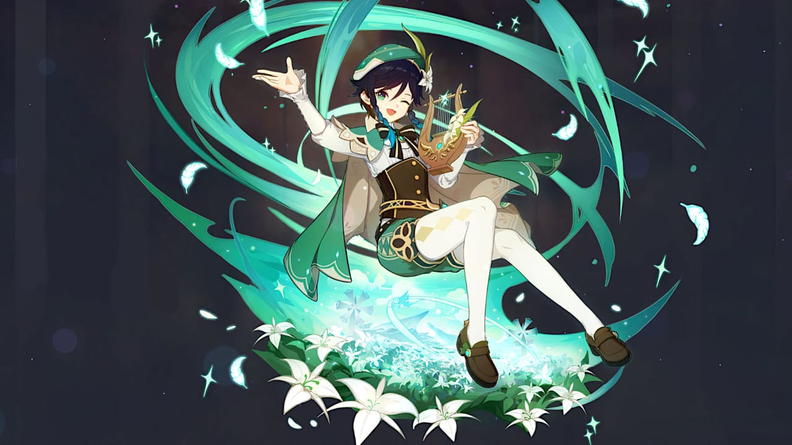
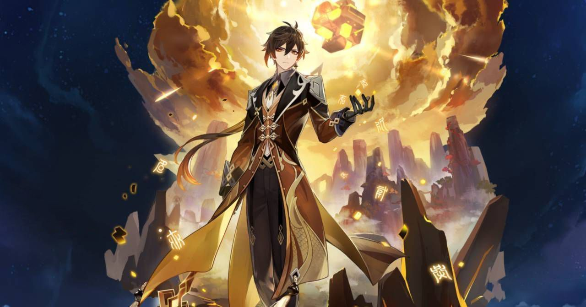
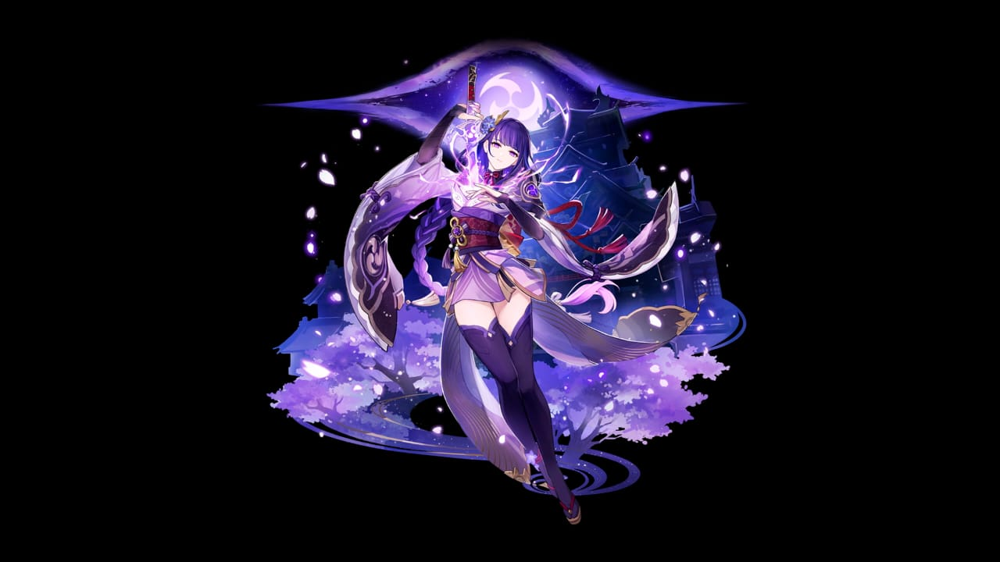
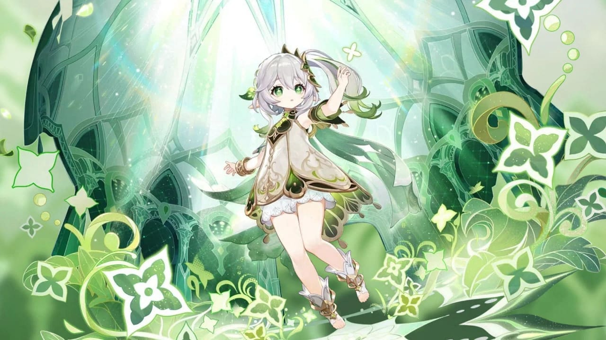
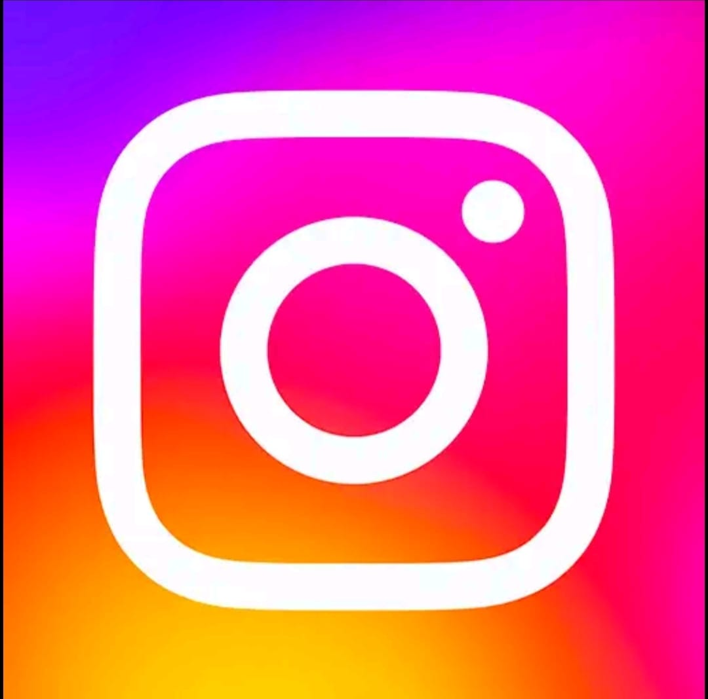
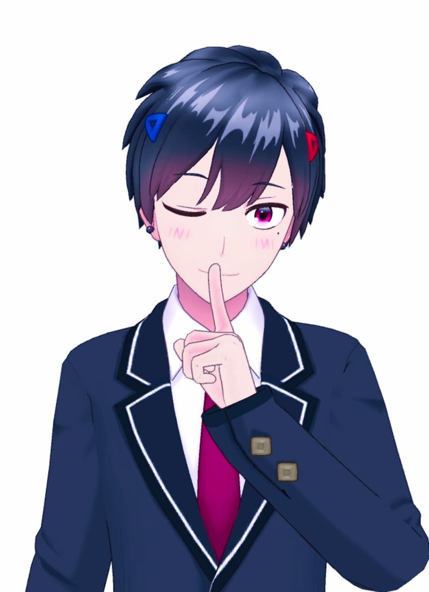
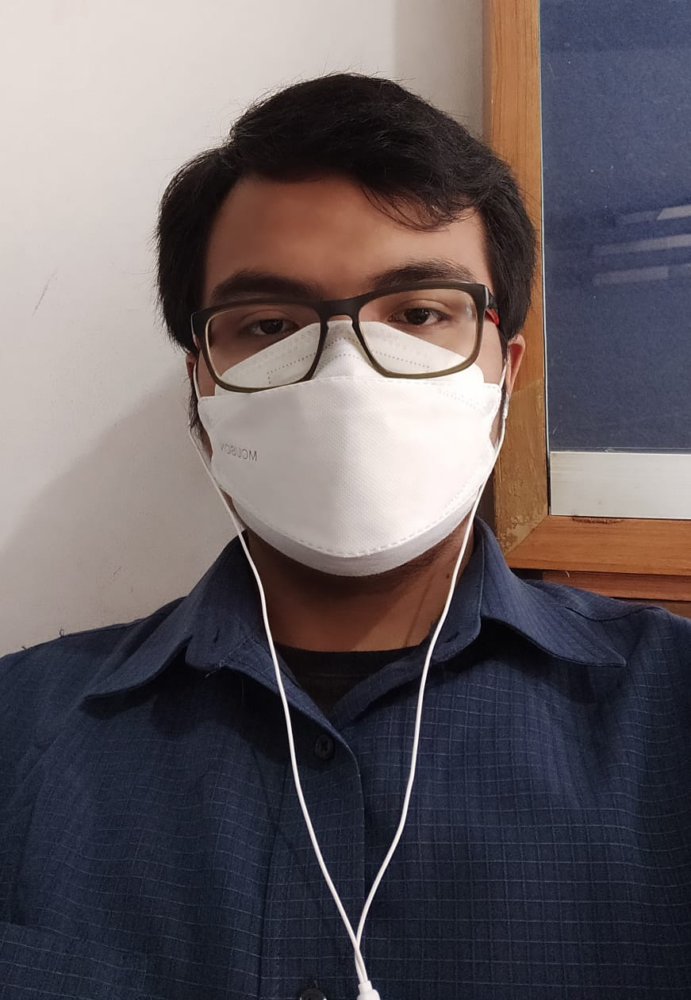

Ini adalah tugas ke-13 dari Mata Kuliah Pemrograman web.
Di PC Windows, Genshin Impact membutuhkan lebih banyak ruang penyimpanan. Saat menginstal game, Pemain dapat menemukan bahwa Game ini hanya membutuhkan ruang disk sebesar 304 MB. Jangan merasa aneh, karena Pemain perlu mengunduh lebih banyak data dan sumber daya saat pertama kali menjalankan Game. Kali ini, dibutuhkan ruang penyimpanan sebesar 64,5 GB. Dalam Mobile/android hp game ini bisa mencapai 22,60GB
Venti
Zhongli
Raiden Shogun
Nahida
"And other Archons"
 instagram.com/muhammad_gaussa
This is my secondary avatar
Dibuat oleh:
Nama: Muhammad Gaussa Rabill Saputra
NIM: 10122215
Kelas: IF-6
Genshin Impact adalah game open-world yang dikembangkan oleh pengembang asal China, miHoYo. Game ini tersedia secara gratis dan menerapkan sistem gacha di dalamnya. Dalam gameplay-nya, Genshin Impact memiliki arena dunia fantasi terbuka.
The Traveler adalah karakter protagonis/antagonis yang dapat dimainkan di Genshin Impact. Dalam cutscene pembuka, The Traveler dari dunia lain melakukan perjalanan melalui alam semesta, sampai dewa tak dikenal menghalangi jalan mereka. Pemain dapat memilih Aether (laki-laki) atau Lumine (perempuan) saat menjelajah dan salah satu saudaranya ditangkap. Kekuatan mereka disegel, membuat mereka terdampar di Teyvat dan tidak bisa bepergian. Traveler menyelamatkan Paimon dengan memancingnya keluar dari air dan dia menemani Traveler sebagai teman perjalanan baru mereka. Bersama-sama mereka melakukan perjalanan untuk menemukan The Seven dan bersatu kembali dengan saudara kandung Traveler yang hilang.
Senjata di Genshin Impact adalah perlengkapan yang membantu pemain dalam pertempuran untuk memberikan damage yang lebih besar. Saat ini ada lima jenis senjata berbeda di Genshin Impact. Setiap karakter hanya dapat menggunakan satu jenis senjata. Setiap jenis senjata seperti (Busur, Katalis, Claymore, Polearm, atau Pedang). Level senjata dapat ditingkatkan dengan EXP Senjata, yang dihasilkan oleh senjata lain atau bahan Peningkatan Senjata.
Artifacts adalah item yang dapat dipasang yang memberikan karakter individu peningkatan ke satu atribut tertentu dan hingga empat atribut bonus. Ini dapat mencakup peningkatan kesehatan, pertahanan, serangan, atau atribut lainnya, baik dalam peningkatan jumlah dasar atau peningkatan persentase.
Mora pada dasarnya adalah 'emas' di dunia Genshin Impact. Ini digunakan untuk banyak hal, termasuk membeli barang standar di toko seperti makanan dan resep. Pemain juga memerlukan Mora untuk menaikkan level senjata dan karakter Anda, jadi pastikan Anda memiliki beberapa cadangan untuk digunakan bersama item naik level Pemain.
Primogem adalah salah satu mata uang premium utama di Genshin Impact. Pemain bisa mendapatkannya melalui berbagai cara, mulai dari menjelajahi dunia hingga menyelesaikan misi.